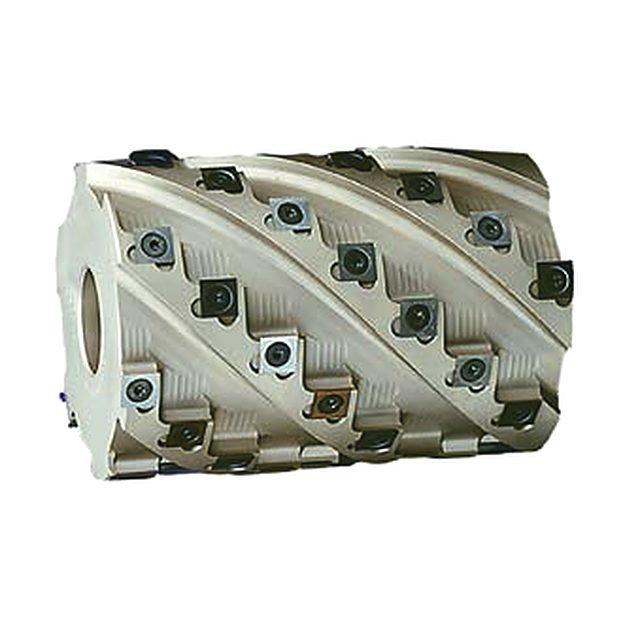
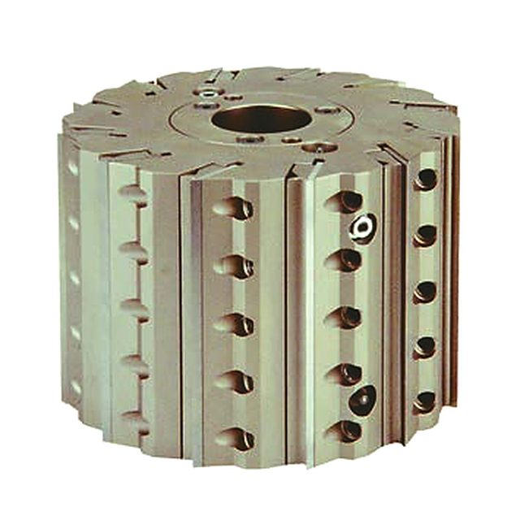
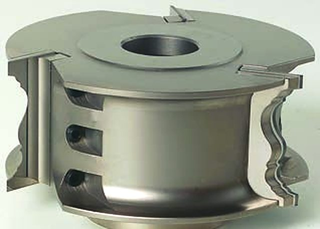
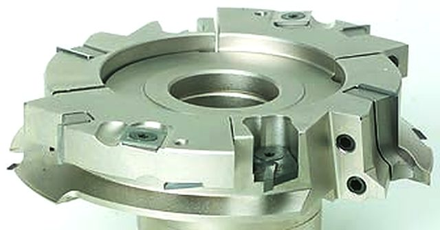

Teste portacoltelli
Per contornare, piallare, profilare e unire: dalle teste Hydro ai gruppi per porte e antine, con coltelli in HW o HS bloccati meccanicamente.
Le 11 sezioni del catalogo
-

TG132 Testa multitaglienti elicoidale per piallare su scorniciatrice, corpo in Avional Chiedi il prezzo -

TPY807 Testa Hydro Rotaplan per piallare su scorniciatrice Chiedi il prezzo -

TSP153 Testa superprofilo Chiedi il prezzo -

TMA128 Gruppo teste per 7 profili e controprofili di antine, Top Line Chiedi il prezzo